ENGINE UNIT > DISASSEMBLY |
| 1. REMOVE OIL FILTER ELEMENT |
 |
Using SST, loosen the oil filter cap 4 revolutions, align the cap ribs vertically and drain the remaining engine oil in the oil filter cap.
| *1 | Oil Filter Bracket Clip |
| *2 | Cap Rib |
Remove the oil filter cap.
| 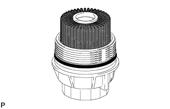 |
Remove the oil filter element and O-ring from the oil filter cap.
 | O-Ring |
 | Oil Filter Element |
| 2. REMOVE ENGINE OIL PRESSURE SWITCH ASSEMBLY |
Disconnect the oil pressure switch connector.
 |
Remove the oil pressure switch.
| 3. REMOVE OIL FILTER BRACKET SUB-ASSEMBLY |
 |
Remove the 2 bolts, 2 nuts and filter bracket.
| 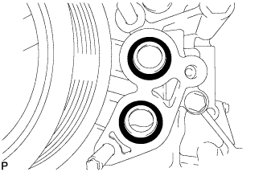 |
Remove the 2 O-rings.
| O-Ring |
| 4. REMOVE CRANKSHAFT PULLEY |
 |
Using SST, remove the crankshaft pulley set bolt.
| *a | Hold |
 | Turn |
Temporarily install the pulley set bolt to the crankshaft until 2 or 3 threads are engaged.
 |
Using the pulley set bolt and SST, remove the crankshaft pulley.
| *a | Hold |
| Turn |
| 5. REMOVE OIL FILLER CAP SUB-ASSEMBLY |
Remove the oil filler cap.
Remove the gasket from the oil filler cap.
| 6. REMOVE OIL FILLER CAP HOUSING |
| 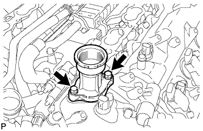 |
Remove the 2 bolts, oil filler cap housing and gasket.
| 7. REMOVE SPARK PLUG |
Using a 16 mm plug wrench, remove the 8 spark plugs.
| 8. REMOVE KNOCK SENSOR |
 |
Disconnect the 4 knock sensor connectors.
Remove the 4 bolts and 4 knock sensors.
| 9. REMOVE VVT SENSOR |
Disconnect the 4 VVT sensor connectors.
| *A | for Bank 2 |
| *B | for Bank 1 |
Remove the 4 bolts and 4 VVT sensors.
| 10. REMOVE CAMSHAFT POSITION SENSOR |
Disconnect the camshaft position sensor connector.
Remove the bolt and camshaft position sensor.
| 11. REMOVE CRANKSHAFT POSITION SENSOR PROTECTOR |
 |
Remove the 2 bolts and crankshaft position sensor protector.
| 12. REMOVE CRANKSHAFT POSITION SENSOR |
 |
Disconnect the crankshaft position sensor connector.
Remove the bolt and crankshaft position sensor.
| 13. REMOVE CAMSHAFT TIMING OIL CONTROL VALVE ASSEMBLY |
 |
for Bank 1:
Remove the 2 bolts and 2 camshaft oil control valves.
| 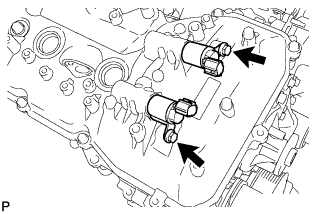 |
for Bank 2:
Remove the 2 bolts and 2 camshaft oil control valves.
| 14. REMOVE CYLINDER BLOCK WATER DRAIN COCK SUB-ASSEMBLY |
Remove the 2 water drain cock plugs from the cylinder block water drain cocks.
| *A | for LH Side |
| *B | for RH Side |
Remove the 2 cylinder block water drain cocks from the cylinder block.
| 15. REMOVE WATER INLET HOUSING |
| 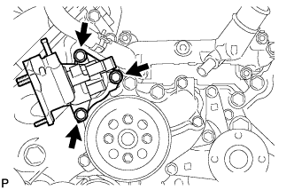 |
Remove the 3 bolts and water inlet housing.
Remove the gasket from the water pump.
| 16. REMOVE FRONT WATER BY-PASS JOINT |
| 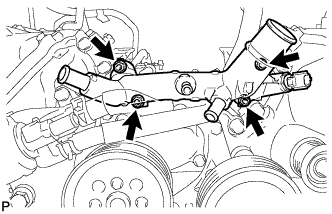 |
Remove the 4 nuts, water by-pass joint and 2 gaskets.
| 17. REMOVE CYLINDER HEAD COVER SUB-ASSEMBLY LH |
| 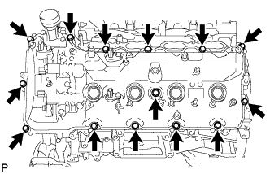 |
Remove the 14 bolts, seal washer, cylinder head cover and gasket.
 |
Remove the 5 gaskets from the camshaft bearing caps (No. 2, No. 3).
| Gasket |
| 18. REMOVE CYLINDER HEAD COVER SUB-ASSEMBLY RH |
 |
Remove the 14 bolts, seal washer, cylinder head cover and gasket.
 |
Remove the 5 gaskets from the camshaft bearing caps (No. 1, No. 3).
| Gasket |
| 19. REMOVE OIL CONTROL VALVE FILTER |
 |
for Bank 1:
Remove the 3 bolts, cylinder head cover spacer, gasket and oil control valve filter.
| *1 | Cylinder Head Cover Spacer |
| *2 | Gasket |
| *3 | Oil Control Valve Filter |
 |
for Bank 2:
Remove the 3 bolts, cylinder head cover spacer, gasket and oil control valve filter.
| *1 | Cylinder Head Cover Spacer |
| *2 | Gasket |
| *3 | Oil Control Valve Filter |
| 20. REMOVE SPARK PLUG TUBE GASKET |
Bend the 4 ventilation baffle plate claws on the cylinder head cover to an angle of 90° or more.
| *1 | Ventilation Baffle Plate Claw |
| *2 | Protective Tape |
Using a screwdriver, pry out the gaskets.
| 21. REMOVE WATER PUMP ASSEMBLY |
| 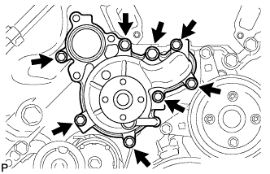 |
Remove the 8 bolts, water pump and gasket.
| 22. REMOVE V-RIBBED BELT TENSIONER ASSEMBLY |
 |
Remove the bolt, 6 mm hexagon bolt and belt tensioner.
| 23. REMOVE TIMING CHAIN COVER SUB-ASSEMBLY |
 |
Remove the 26 bolts and nut shown in the illustration.
| 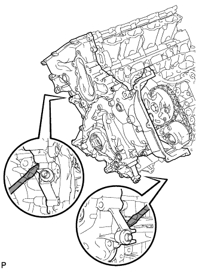 |
Remove the timing chain cover by prying between it and the cylinder head and cylinder block with a screwdriver as shown in the illustration.
| Protective Tape |
 |
Remove the gasket from the cylinder block.
 |
Remove the O-ring from the oil pan.
| 24. REMOVE WATER INLET PIPE |
| 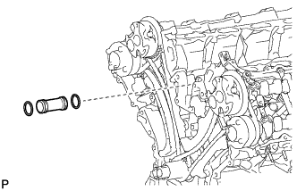 |
Remove the water inlet pipe.
Remove the 2 O-rings from the water inlet pipe.
| 25. REMOVE FRONT CRANKSHAFT OIL SEAL |
Place the timing chain cover on wooden blocks.
| 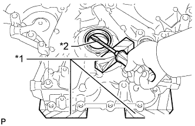 |
Place the oil pump on a wooden block.
| *1 | Wooden Block |
| *2 | Protective Tape |
Using a screwdriver and wooden block, pry out the front crankshaft oil seal.
| 26. SET NO. 1 CYLINDER TO TDC/COMPRESSION |
Temporarily install the pulley set bolt.
Rotate the crankshaft clockwise so that the timing marks on the crankshaft timing gear and camshaft timing gears are as shown in the illustration.

| *1 | Crankshaft Timing Gear Key | *2 | Timing Mark |
| *a | Toward Ceiling | *b | Timing Mark Position |
| *c | Knock Pin Position | *d | Approximately 2° |
| *e | Approximately 45° | *f | Approximately 16° |
| *g | Approximately 18° | *h | Approximately 32° |
| 27. REMOVE NO. 1 CHAIN TENSIONER ASSEMBLY LH |
 |
Move the stopper plate upward to release the lock and push the plunger deep into the No. 1 chain tensioner.
| *1 | Plunger |
| *2 | Stopper Plate |
 |
Move the stopper plate downward to set the lock and insert a hexagon wrench into the stopper plate hole.
| *1 | Plunger |
| *2 | Stopper Plate |
| *3 | Hexagon Wrench |
 |
Remove the 2 bolts, No. 1 chain tensioner LH and gasket.
| 28. REMOVE CHAIN TENSIONER SLIPPER LH |
 |
| 29. REMOVE NO. 1 CHAIN VIBRATION DAMPER LH |
| 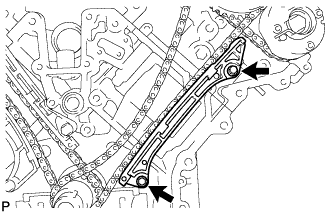 |
Remove the 2 bolts and No. 1 chain vibration damper LH.
| 30. REMOVE NO. 1 CHAIN SUB-ASSEMBLY LH |
| 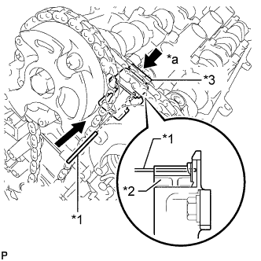 |
While pushing down the No. 3 chain tensioner, insert a pin with a diameter of 1.0 mm (0.0394 in.) into the hole to fix the tensioner in place.
| *1 | Pin |
| *2 | Plunger |
| *3 | No. 3 Chain Tensioner |
| *a | Push |
 |
Hold the hexagonal portion of the camshaft with a wrench and loosen the bolt.
| *a | Hold |
| Turn |
| 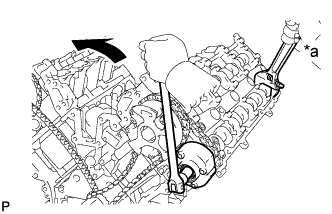 |
Hold the hexagonal portion of the camshaft with a wrench and loosen the bolt.
| *a | Hold |
| Turn |
Remove the 2 bolts. Then with the No. 1 and No. 2 chains still connected to the gears, remove the camshaft timing gear, camshaft timing exhaust gear and crankshaft timing sprocket LH.
Remove the No. 1 and No. 2 chains from the gears.
| 31. REMOVE NO. 3 CHAIN TENSIONER ASSEMBLY |
 |
Remove the 2 bolts and No. 3 chain tensioner.
| 32. REMOVE NO. 1 CHAIN TENSIONER ASSEMBLY RH |
 |
Move the stopper plate upward to release the lock and push the plunger deep into the No. 1 chain tensioner.
| *1 | Plunger |
| *2 | Stopper Plate |
| 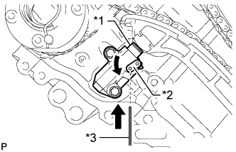 |
Move the stopper plate downward to set the lock and insert a hexagon wrench into the stopper plate hole.
| *1 | Plunger |
| *2 | Stopper Plate |
| *3 | Hexagon Wrench |
| 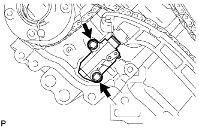 |
Remove the 2 bolts and No. 1 chain tensioner RH.
| 33. REMOVE CHAIN TENSIONER SLIPPER RH |
 |
| 34. REMOVE NO. 1 CHAIN VIBRATION DAMPER RH |
 |
Remove the 2 bolts and No. 1 chain vibration damper RH.
| 35. REMOVE NO. 1 CHAIN SUB-ASSEMBLY RH |
 |
While raising up the No. 2 chain tensioner, insert a pin with a diameter of 1.0 mm (0.0394 in.) into the hole to fix the tensioner in place.
| *1 | Pin |
| *2 | Plunger |
| *3 | No. 2 Chain Tensioner |
| *a | Push |
| 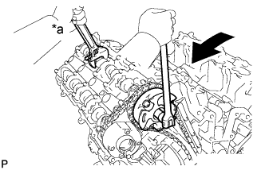 |
Hold the hexagonal portion of the camshaft with a wrench and loosen the bolt.
| *a | Hold |
| Turn |
 |
Hold the hexagonal portion of the camshaft with a wrench and loosen the bolt.
| *a | Hold |
| Turn |
Remove the 2 bolts. Then with the No. 1 and No. 2 chains still connected to the gears, remove the camshaft timing gear, camshaft timing exhaust gear and crankshaft timing sprocket RH.
Remove the No. 1 and No. 2 chains from the gears.
| 36. REMOVE NO. 2 CHAIN TENSIONER ASSEMBLY |
 |
Remove the 2 bolts and No. 2 chain tensioner.
| 37. REMOVE CRANKSHAFT TIMING GEAR KEY |
Using a screwdriver, remove the 2 crankshaft timing gear keys from the crankshaft.
| 38. REMOVE CAMSHAFT BEARING CAP LH |
| 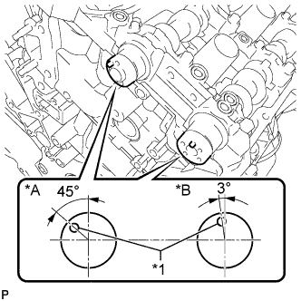 |
Make sure that the knock pins of the camshafts are positioned as shown in the illustration.
| *A | for Intake Side |
| *B | for Exhaust Side |
| *1 | Knock Pin |
 |
Uniformly loosen and remove the 10 bearing cap bolts in the sequence shown in the illustration.
| 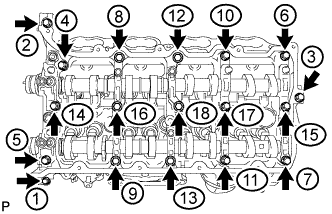 |
Uniformly loosen and remove the 18 bearing cap bolts in the sequence shown in the illustration.
Remove the 6 camshaft bearing caps.
| 39. REMOVE NO. 3 CAMSHAFT SUB-ASSEMBLY |
Remove the No. 3 camshaft from the camshaft housing LH.
| 40. REMOVE NO. 4 CAMSHAFT SUB-ASSEMBLY |
Remove the No. 4 camshaft from the camshaft housing LH.
| 41. REMOVE CAMSHAFT HOUSING SUB-ASSEMBLY LH |
| 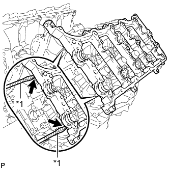 |
Remove the camshaft housing by prying between the cylinder head and camshaft housing with a screwdriver.
| *1 | Protective Tape |
| 42. REMOVE CAMSHAFT BEARING CAP RH |
 |
Make sure that the knock pins of the camshafts are positioned as shown in the illustration.
| *A | for Exhaust Side |
| *B | for Intake Side |
| *1 | Knock Pin |
| 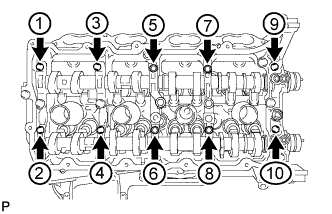 |
Uniformly loosen and remove the 10 bearing cap bolts in the sequence shown in the illustration.
| 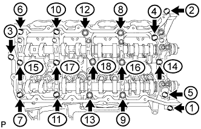 |
Uniformly loosen and remove the 18 bearing cap bolts in the sequence shown in the illustration.
Remove the 6 camshaft bearing caps.
| 43. REMOVE NO. 1 CAMSHAFT SUB-ASSEMBLY |
Remove the No. 1 camshaft from the camshaft housing RH.
| 44. REMOVE NO. 2 CAMSHAFT SUB-ASSEMBLY |
Remove the No. 2 camshaft from the camshaft housing RH.
| 45. REMOVE CAMSHAFT HOUSING SUB-ASSEMBLY RH |
 |
Remove the camshaft housing by prying between the cylinder head and camshaft housing with a screwdriver.
| *1 | Protective Tape |
| 46. REMOVE NO. 1 VALVE ROCKER ARM SUB-ASSEMBLY |
Remove the 32 No. 1 valve rocker arms from the cylinder head.
| 47. REMOVE VALVE LASH ADJUSTER ASSEMBLY |
Remove the 32 valve lash adjusters from the cylinder head.
| 48. REMOVE VALVE STEM CAP |
Remove the 32 valve stem caps from the cylinder head.
| 49. REMOVE CYLINDER HEAD SUB-ASSEMBLY LH |
 |
Uniformly loosen and remove the 2 bolts in the sequence shown in the illustration.
 |
Using a 10 mm bi-hexagon wrench, uniformly loosen the 10 cylinder head bolts in the sequence shown in the illustration. Remove the 10 cylinder head bolts and plate washers.
Remove the cylinder head LH.
| 50. REMOVE NO. 2 CYLINDER HEAD GASKET |
| 51. REMOVE CYLINDER HEAD SUB-ASSEMBLY |
 |
Uniformly loosen and remove the 2 bolts in the sequence shown in the illustration.
 |
Using a 10 mm bi-hexagon wrench, uniformly loosen the 10 cylinder head bolts in the sequence shown in the illustration. Remove the 10 cylinder head bolts and plate washers.
Remove the cylinder head.
| 52. REMOVE CYLINDER HEAD GASKET |
| 53. REMOVE CYLINDER BLOCK WATER JACKET SPACER |
| 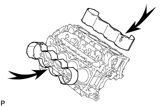 |
Remove the 2 cylinder block water jacket spacers from the cylinder block.
| 54. REMOVE OIL RETURN PIPE GASKET |
Using a screwdriver, pry out the oil return pipe gasket.
| *1 | Protective Tape |
| 55. REMOVE VENTILATION PIPE GASKET |
Using a screwdriver, pry out the ventilation pipe gasket.
| *1 | Protective Tape |
| 56. REMOVE NO. 1 HEAT EXCHANGER COVER |
Remove the 12 bolts and 2 nuts.
| Bolt |
 | Nut |
 |
Remove the No. 1 heat exchanger cover by prying between the No. 1 heat exchanger cover and cylinder block with a screwdriver.
| *1 | Protective Tape |
| 57. REMOVE NO. 2 OIL PAN SUB-ASSEMBLY |
 |
Remove the 12 bolts and 2 nuts.
| Bolt |
| Nut |
Insert the blade of an oil pan seal cutter between the oil pans. Cut through the applied sealer and remove the No. 2 oil pan.
| 58. REMOVE NO. 1 OIL PAN SUB-ASSEMBLY |
 |
Remove the 14 bolts and 2 nuts.
| Bolt |
| Nut |
| 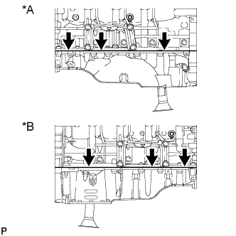 |
Remove the No. 1 oil pan by prying between the No. 1 oil pan and cylinder block with a screwdriver.
| *A | for LH Side |
| *B | for RH Side |
| 59. REMOVE NO. 1 OIL PAN BAFFLE PLATE |
| 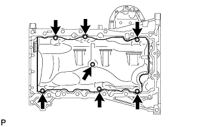 |
Remove the 7 bolts and No. 1 oil pan baffle plate.
| 60. REMOVE OIL STRAINER SUB-ASSEMBLY |
| 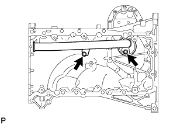 |
Remove the 2 bolts, oil strainer and O-ring.
| 61. REMOVE REAR ENGINE OIL SEAL RETAINER |
| 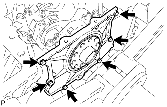 |
Remove the 6 bolts and rear engine oil seal retainer.
Using a screwdriver, pry out the rear engine oil seal retainer.
| 62. REMOVE REAR CRANKSHAFT OIL SEAL |
Place the rear engine oil seal retainer on wooden blocks.
| *1 | Wooden Block |
Using a screwdriver and hammer, tap out the rear crankshaft oil seal.
| 63. REMOVE OIL DRAIN PIPE SUB-ASSEMBLY |
 |
Remove the bolt and oil drain pipe.
Remove the O-ring.
| 64. REMOVE RING PIN |
| 65. REMOVE STUD BOLT |